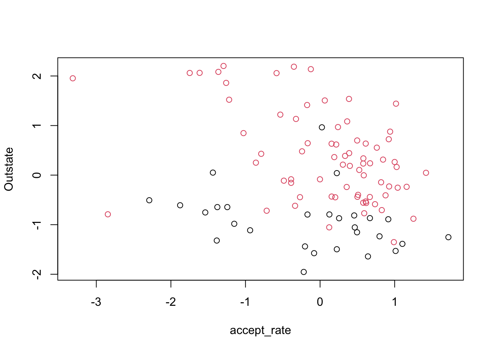
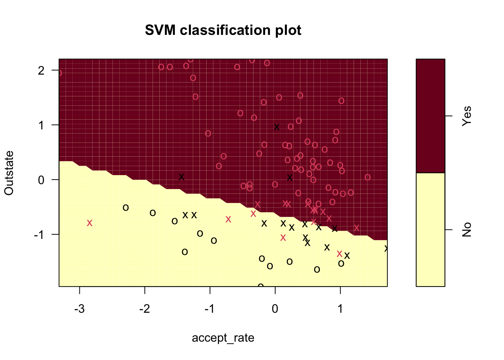
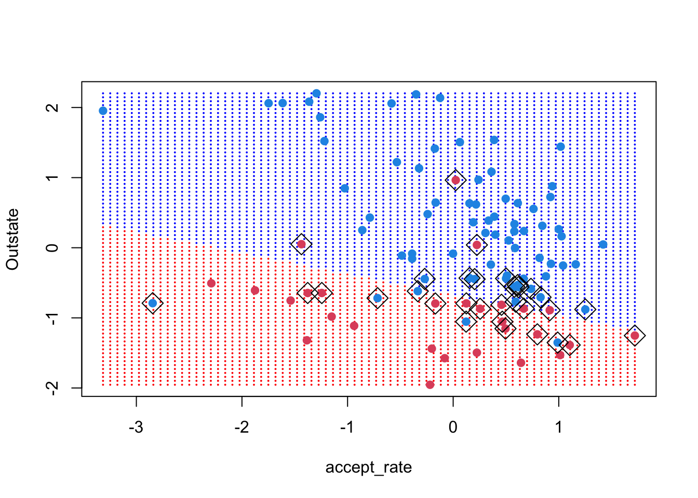
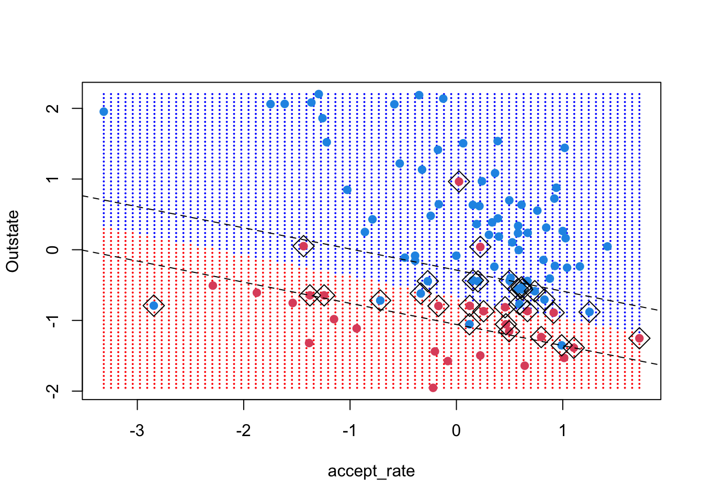
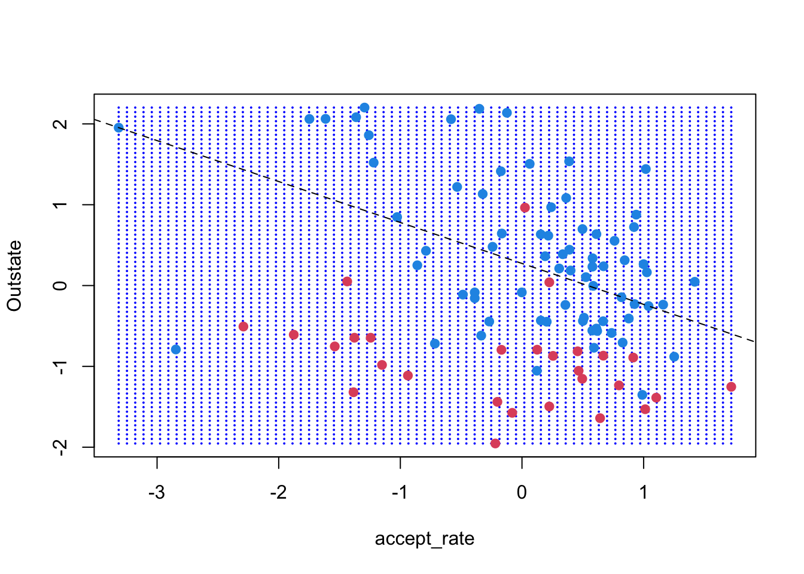
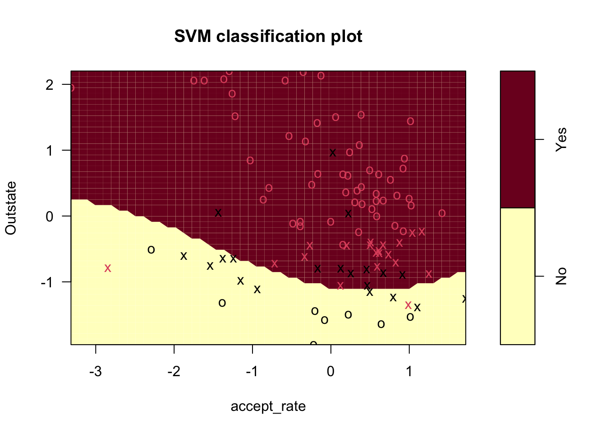
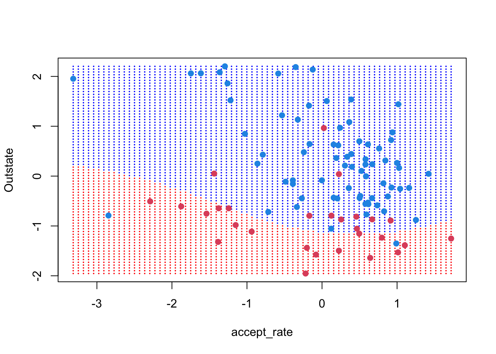
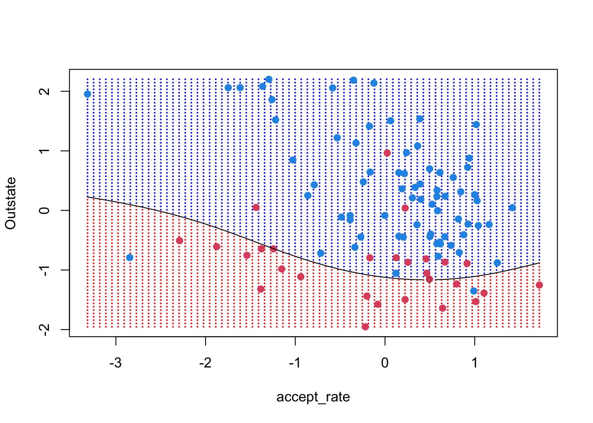
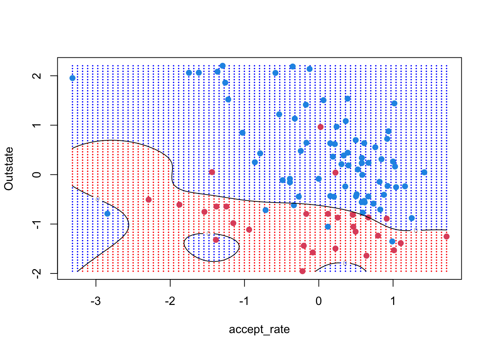

library(ISLR)
college_data <- CollegeSection 9 - Support Vector Machines
Notes
Note that the material in these notes draws on the excellent past notes by TFs Laura Morris, Emily Mower and more thorough treatment of these topics in by Gareth James, Daniela Witten, Trevor Hastie and Robert Tibshirani.
Support Vector Machines
In this class, we will see a series of methods that fall under the support vector umbrella but which vary significantly in their flexibility. We start with maximal margin classifiers, which are the most rigid and only work when the data can be perfectly separated with a linear decision boundary. Then, we will cover support vector classifiers, which still uses a linear decision boundary, but which can accommodate data that cannot be perfectly separated by such a decision boundary. We will then cover support vector machines, which flexibly transform the original data to allow for decision boundaries that are non-linear in the original feature space (though they remain linear in the transformed feature space). Like support vector classifiers, support vector machines will also accommodate data that is not perfectly separable. Finally, we will touch upon extending the support vector ideas to multiclass settings.
Maximal Margin Classifier
Maximal margin classifiers use a separating hyperplane to divide the feature space in two, with the idea being that all observations in one class lie on one side of the separating hyperplane while all observations of the other class lie on the other side.
Separating Hyperplanes
A hyperplane is a flat affine subspace that has one fewer dimensions than the feature space. The first part of the definition (“flat affine subspace”) means that the subspace can be described by a linear equation and does not need to pass through the origin. The second part of the definition (about the dimensionality) means that with \(p\) features, the hyperplane will have \(p-1\) dimensions. When we say “separating hyperplane,” we mean a hyperplane that separates the observations in one class from observations in the other by slicing the feature space in two.
Imagine a dataset with only two features, \(X_1\) and \(X_2\). The feature space is a plane, which can be divided by a line (which is a hyperplane). Suppose you had three features, \(X_1\), \(X_2\), and \(X_3\). The feature space is 3D and can be divided in two by a plane (which is also a hyperplane). We can continue to generalize to higher dimensional feature spaces.
The separating hyperplane that divides the feature space with \(p\) features can be described by a linear function of the following form
\[ \beta_0 + \beta_1 x_1 + \beta_2 x_2 + ... + \beta_p x_p = 0 \]
Classifications with Separating Hyperplanes
We can then use this equation as our classifier. Specifically, let \(f(x)\) represent the left hand side of the previous equation. To identify the class for observation \(x^\star\), you first calculate \(f(x^\star)\)
\[ f(x^*) = \beta_0 + \beta_1 x_1^* + \beta_2 x_2^* + ... + \beta_p x_p^* \]
If the resulting value is negative, the point lies to one side of the hyperplane and is assigned to class \(y=-1\). If it’s positive, the point lies on the other side of the hyperplane and is assigned to class \(y=+1\). If the point is far from the separating hyperplane, we are quite confident in our classification. If it’s close, we have much more uncertainty. In this sense, the sign of \(f(x^\star)\) gives us the class and the magnitude of \(f(x^\star)\) gives us our level of confidence. Given the linear form of the separating hyperplane, the decision boundary will also be linear.
Note that we are now using \(+1\) and \(-1\) for our binary classes, whereas up to this point we have used \(0\) and \(1\).
Maximal Margin Classifier
The maximal margin classifier can be used when the data is perfectly separable, meaning that there exists a separating hyperplane such that all observations from one class fall on one side of the hyperplane and all observations from the other class fall on the other side of the hyperplane. However, when one such separating hyperplane exists, usually infinite such separating hyperplanes exist. The maximal margin classifier provides a disciplined way to choose among them.
Specifically, it measures the distance between each point and the separating hyperplane. The minimum distance between all points and the separating hyperplane is referred to as the margin. The maximal margin classifier selects that separating hyperplane that leads to the largest possible margin, that is, the largest possible distance between the separating hyperplane and the closest training points. Note that as you increase the distance between the decision boundary and the closest point from one class, you must decrease the distance between the decision boundary and the closest point(s) from the other class. Therefore, the margin will always be defined by at least one point from each class. These points are called ``support’’ points or vectors and the model is fully defined by them, so if they move the model changes. Other points can move however they like outside the margins, and as long as they do not cross the margins, the model will not change.
When the margin is large, it suggests the classes are very well separated and performance on a test set should be good. When the margin is small, the classes are only barely separated and the exact decision boundary may not do as well in the test set.
Support Vector Classifier
Sometimes the data cannot be perfectly separated by a separating hyperplane. In such cases, the support vector classifier offers a generalization of the maximal margin classifier.
The support vector classifier is extremely similar to the maximal margin classifier, except that it allows some points to cross the margin and even the decision boundary (e.g. be misclassified). Because some points can cross the margin under the support vector classifier, we call the margin a “soft margin” compared to the “hard margin” of the maximal margin classifier, which does not permit any points to cross it.
The support vector classifier improves empirically relative to the maximal margin classifier in three key ways. One, it works for data that cannot be perfectly separated by a hyperplane. Two, it is more robust to individual points, meaning that because it allows points to cross the margin, movement in points near the margin will not have the same dramatic impact on the margin and decision boundary that they would have had under the maximal margin classifier. Third, related to this point, the support vector classifier yields better predictions for most training observations.
The support vector classifier works by creating slack variables \(\epsilon_i\) and allowing a misclassification “budget” \(C\). The slack variables \(\epsilon_i\) will be zero for all observations that fall on the correct side of the margin. If the observation is on the wrong side of the margin, \(\epsilon_i > 0\) and if it is on the wrong side of the hyperplane, \(\epsilon_i > 1\). The sum of the \(\epsilon_i\)s must be no greater than the budget \(C\), so when the budget \(C=0\), no observations will be allowed on the wrong side of the margin. In this way, the maximal margin classifier is a special case of the support vector classifier. More generally, no more than \(C\) observations can be misclassified, because \(\epsilon_i>1\) when the observation is misclassified and \(C\) is the sum of the \(\epsilon_i\)’s.
The budget \(C\) can be seen as a tuning parameter and is thus generally found through cross-validation. As \(C\) goes to zero, the classifier converges to the maximal margin classifier, so it is less tolerant of violations across the margin and thus the margins will shrink. As \(C\) gets large, it will become more tolerant of violations and the margin will increase.
In the support vector classifier, only observations that lie on the margin or that violate the margin will affect the hyperplane. Just as with the maximal margin classifier, points that lie on the correct side of the margin will not be used to define the hyperplane. As \(C\) increases, there are more violations and so more support vectors compared to when \(C\) is small. Given that there are more support vectors used when \(C\) is large, large \(C\) leads to lower variance though higher bias compared to small \(C\) (which uses a small number of support vectors). Intuitively, this is because the model is not as sensitive to the exact training points since more of them are used in defining the hyperplane when \(C\) is large.
Support Vector Machine
The support vector machine extends the support vector classifier to the case where the decision boundary is non-linear. It is somewhat analogous to using polynomial regression when the linearity assumption of linear regression does not hold. Specifically, it works with a transformed feature space and finds a decision boundary that is linear in the transformed space, but which is non-linear in the original space.
However, the way in which the support vector machine transforms the original space is new. It does the transformation using a kernel \(K(x_i, x_{i^\prime})\), which is a generalization of the inner product \(<x_i,x_{i^\prime}>\) (e.g. dot product). The hyperplane is then defined by
\[ f(x) = \beta_0 + \sum_{i\in \mathcal{S}}\alpha_i K(x,x_i) \]
The values of \(\alpha_i\) are only non-zero for support vectors (points that lie on or across the margin). Some popular kernels include the polynomial kernel and the radial kernel. Note that the support vector classifier is a special case of the support vector machine where the kernel is a polynomial kernel of degree \(d=1\). Just like the support vector classifier, it maintains the principle of a budget \(C\), though now we use \(\alpha_i\) instead of \(\epsilon_i\).
The argument for why we use a kernel rather than an enlarged feature space has to do with computational efficiency. Using the kernel only requires computing the kernel (the generalized inner product) for each unique pair $(x_i, x_{i^}) $ in the training data; it does not require explicitly working in a transformed feature space, which may be computationally intractable. For example, suppose we wanted to expand our feature space from \(x_1\) and \(x_2\) to also include \(x_3 = x_1^2 + x_2^2\). Instead of explicitly calculating \(x_3\), we only need to adjust the inner product between two points \(a\) and \(b\) from
\[ K(a,b) = x_{1,a}x_{1,b}+x_{2,a}x_{2,b} \]
to
\[ K(a,b) = x_{1,a}x_{1,b}+x_{2,a}x_{2,b} + (x_{1,a}^2 + x_{1,b}^2)(x_{2,a}^2 + x_{2,b}^2) \]
The kernel function can take many forms, including polynomial and radial functions. Different kernel functions allow for different levels of model flexibility. However, note that as with many other models we’ve seen this semester, the more flexible we make the kernel, the more likely we are to fit the training data well (low bias) but risk overfitting the training data (high variance). Therefore, in the support vector machine, a very flexible kernel function leads to low bias but high variance.
Extensions to Multiclass Problems
The idea of support vector machines does not generalize easily to the multiclass setting, but two options have been proposed.
One is called the one-versus-one approach, where a collection of models is built that each evaluate the question of whether the observation belongs to class \(a\) or class \(b\). This is repeated with all possible pairs of classes in the data. For a given test point, you tally how many times the observation is assigned to each of the \(K\) classes and assign whichever class was assigned most often.
The other is called the one-versus-all approach, where \(K\) models are built and each model compares the class at hand to a collection of the other \(K-1\) classes, coded collectively as -1. For a given test point, you determine which \(f_k(x)\) is largest (most confidence) and assign that class.
Code
This week, we will use the College data that is part of the ISLR package
We will start by fitting a support vector classifier to the College data. The College data has 18 variables. We will treat “Private” as the outcome variable and the acceptance rates and out-of-state tuition as features. Since the first variable currently exists as a count (not rate), we begin by creating the new variable. To do this, we will use the dplyr package. Note: if your code won’t run, make sure your MASS package isn’t loaded.
library(dplyr)
transformed_data <- college_data %>%
mutate(accept_rate = Accept/Apps) %>%
select(accept_rate, Outstate, Private)The svm function will have a hard time unless we scale our data. There is an option to scale within the svm() function that is perfectly sufficient when training a model. However, we will be doing a lot of visual inspection, so it will help to have our raw data scaled for these exercises.
transformed_data <- transformed_data %>%
mutate(accept_rate = scale(accept_rate),
Outstate = scale(Outstate))To help with visual interpretation, we will take a random subset of the full data to use in most examples
set.seed(222)
small_data <- transformed_data[sample(1:nrow(transformed_data), 100),]Later, it will be convenient to have the features in their own matrix and the outcome in its own vector, so we do that now
x <- as.matrix(small_data[, 1:2])
y <- if_else(small_data[, 3] == "Yes", 1, -1)
summary(transformed_data) accept_rate.V1 Outstate.V1 Private
Min. :-4.027367 Min. :-2.0135809 No :212
1st Qu.:-0.484557 1st Qu.:-0.7757038 Yes:565
Median : 0.216325 Median :-0.1120227
Mean : 0.000000 Mean : 0.0000000
3rd Qu.: 0.690631 3rd Qu.: 0.6175294
Max. : 1.720364 Max. : 2.7987285 We will start by looking at our data, where the color represents whether the college is private or public
plot(small_data[, c("accept_rate", "Outstate")],
col = small_data$Private)
Clearly, our data is not perfectly separable, so we cannot use the maximal margin classifier. Let’s try a support vector classifier. For this, we use the package e1071, which implements support vector machines in R. Recall that the support vector classifier is a special case of the support vector machine where the kernel is linear. We have been talking about a “budget” for points that violate the margin or decision boundary. This package uses “cost”, which is basically the inverse – how much should an error cost? If we want to allow a big budget, that translates to using a small cost parameter. The default cost is 1.
# install.packages("e1071")
library(e1071)
college_svm1 <- svm(Private ~ Outstate + accept_rate,
data = small_data,
kernel = "linear",
cost = 10,
scale = FALSE)
plot(college_svm1, small_data)
There are a few main things we can see from this plot:
- The decision boundary, which is linear even though it looks jagged
- The support vectors (x’s) and all other points (o’s)
- The regions where the model predicts “Yes” and “No”
We can also learn about our model using summary()
summary(college_svm1)
Call:
svm(formula = Private ~ Outstate + accept_rate, data = small_data,
kernel = "linear", cost = 10, scale = FALSE)
Parameters:
SVM-Type: C-classification
SVM-Kernel: linear
cost: 10
Number of Support Vectors: 32
( 16 16 )
Number of Classes: 2
Levels:
No YesFrom this output, we see: - (1) The number of support vectors, total and in each class - (2) The type of kernel (“linear”) and cost (10)
We can find which points serve as support vectors by getting their row numbers. Note that the “Yes” SV indices are listed first, followed by the “No” SV indices
college_svm1$index [1] 8 12 15 21 24 31 32 39 50 52 56 61 62 65 92 94 4 6 7 10 17 25 40 70 71
[26] 72 74 75 87 88 95 98The svm() function in R does not immediately return the coefficients for the support vector classifier. It is believed that the reason for this is that the function is a very general function and the linear kernel used for the support vector classifier is only one of the many kernels it can handle. However, thanks to code from Data Camp, we can recover the the coefficients. Note that rho actually gives -beta0 “t” in line 100 below stands for transpose, “drop” get rid off redundant dimensions. See link below for more information https://statisticsglobe.com/drop-function-r
beta <- drop(t(college_svm1$coefs) %*% x[college_svm1$index,])
beta0 <- -college_svm1$rho
print(beta)accept_rate Outstate
0.7777781 2.6005940 print(beta0)[1] 1.749692To understand our model better, we will:
- Create a grid of x-values that cover our feature space
- Predict a class for each point on the grid to get shading
- Plot our points and highlight support vectors
- Plot the decision boundary and margins
For 1, I will us a function provided by Data Camp:
make.grid = function(x, n = 75) {
grange <- apply(x, 2, range)
x1 <- seq(from = grange[1, 1], to = grange[2, 1], length = n)
x2 <- seq(from = grange[1, 2], to = grange[2, 2], length = n)
expand.grid(X1 = x1, X2 = x2)
}
xgrid <- make.grid(x)
colnames(xgrid) <- colnames(x)For 2, we will use the predict() function to get the class for each point on the grid
ygrid <- predict(college_svm1, xgrid)For 3, we will plot the grid, then the points, then the support vectors
plot(xgrid,
col = c("red","blue")[as.numeric(ygrid)],
pch = 20,
cex = .2)
points(x,
col = y + 3,
pch = 19)
points(x[college_svm1$index,],
pch = 5,
cex = 2)
For (4), we can use the function abline, which takes the intercept and slope of a line. Recall that the coefficients we have recovered are of the form b0 + b1 * x1 + b2 * x2 = 0. To convert that to the abline form, we do some elementary math:
[b_2 * x_2 = -b_0 - b_1 * x_1]
[x_2 = ]
So the intercept is \(-b_0/b_2\) and the slope is \(-b_1/b_2\).
plot(xgrid,
col = c("red","blue")[as.numeric(ygrid)],
pch = 20,
cex = .2)
points(x,
col = y + 3,
pch = 19)
points(x[college_svm1$index,],
pch = 5,
cex = 2)
abline(-beta0 / beta[2], -beta[1]/beta[2])The margins have the same slope as the decision boundary but a different intercept. Under the formulation used by the svm() function and described on page 357 of ISLR, the margin equals 1 (that’s the vertical distance between the decision boundary and the margin lines). Thus, we want the intercept of the lines:
[b_0 + b_1 * x_1 + b_2 * x_2 = ]
[x_2 = ]
[x_2 = - * x_1]
So, the intercepts are \((\pm 1 - b_0) / b_2\)
plot(xgrid,
col = c("red","blue")[as.numeric(ygrid)],
pch = 20,
cex = .2)
points(x,
col = y + 3,
pch = 19)
points(x[college_svm1$index,],
pch = 5,
cex = 2)
abline((-1 - beta0) / beta[2], -beta[1] / beta[2], lty = 2)
abline((+1 - beta0) / beta[2], -beta[1] / beta[2], lty = 2)
Let’s see what happens if we decrease the cost of errors and repeat the same exercises. To make this easy to repeat for different cost values, we stick our code in a function.
svm_cost <- function(df, cost_val, xgrid) {
svmfit <- svm(Private ~ Outstate + accept_rate,
data = df,
kernel = "linear",
cost = cost_val,
scale = FALSE)
print(paste("# of support vectors =", length(svmfit$index)))
beta <- drop(t(svmfit$coefs) %*% x[svmfit$index,])
beta0 <- -svmfit$rho
ygrid <- predict(svmfit, xgrid)
plot(xgrid, col = c("red","blue")[as.numeric(ygrid)], pch = 20, cex = .2)
points(x, col = y + 3, pch = 19)
points(x[df$index,], pch = 5, cex = 2)
abline(-beta0 / beta[2], -beta[1]/beta[2])
abline((-1 - beta0) / beta[2], -beta[1] / beta[2], lty = 2)
abline((+1 - beta0) / beta[2], -beta[1] / beta[2], lty = 2)
}Run the function svm_cost() using cost parameters 10, 1, 0.1, 0.01
Example:
svm_cost(small_data, .01, xgrid) [1] "# of support vectors = 57"
At first, the margins widen within the visible frame, but we can see that the decision boundary changes as we decrease the cost of errors. Additionally, as the cost of errors decrease, the number of support vectors increase.
While the visual exercise is useful in building intuition, often you will work with your full data set. In this case and in general, cross-validation is preferred to visual inspection. You can perform cross-validation to select among models using linear kernels by using the function tune()
set.seed(222)
tune_linear <- tune(svm,
Private ~ accept_rate + Outstate,
data = transformed_data,
kernel = "linear",
ranges = list(cost = c(0.001, 0.01, 0.1, 1, 5, 10, 100)))We can see which cost had the best performance and compare how cross-validation errors varied across cost values. In the case of our data set, performance levels off after cost = 1.
summary(tune_linear)
Parameter tuning of 'svm':
- sampling method: 10-fold cross validation
- best parameters:
cost
0.1
- best performance: 0.1479687
- Detailed performance results:
cost error dispersion
1 1e-03 0.2728938 0.03581616
2 1e-02 0.2150516 0.04654521
3 1e-01 0.1479687 0.03534060
4 1e+00 0.1479687 0.03258152
5 5e+00 0.1479687 0.03085414
6 1e+01 0.1492674 0.03148925
7 1e+02 0.1492674 0.03148925We can set the best model accordingly:
best_linear_mod <- tune_linear$best.model
summary(best_linear_mod)
Call:
best.tune(METHOD = svm, train.x = Private ~ accept_rate + Outstate,
data = transformed_data, ranges = list(cost = c(0.001, 0.01,
0.1, 1, 5, 10, 100)), kernel = "linear")
Parameters:
SVM-Type: C-classification
SVM-Kernel: linear
cost: 0.1
Number of Support Vectors: 328
( 164 164 )
Number of Classes: 2
Levels:
No YesAs we’ve done with other models this semester, you could split your data into test and training data, train your model on the training data (including selecting a model) using cross-validation and then test its performance on the test data.
Remember that we used only two features. This was useful for visual inspection, but often you have access to many more features. What would happen if we ran the same model using all features available in the original data set college_data? Unsurprisingly, we can obtain much lower error with more features.
tune_linear_full <- tune(svm,
Private ~ .,
data = college_data,
kernel = "linear",
ranges = list(cost = c(0.001, 0.01, 0.1,
1, 5, 10, 100)))
summary(tune_linear_full)
Parameter tuning of 'svm':
- sampling method: 10-fold cross validation
- best parameters:
cost
5
- best performance: 0.05401265
- Detailed performance results:
cost error dispersion
1 1e-03 0.14673660 0.04776340
2 1e-02 0.07335997 0.03590371
3 1e-01 0.06565102 0.02678567
4 1e+00 0.05657676 0.02504778
5 5e+00 0.05401265 0.02162469
6 1e+01 0.05787546 0.02029151
7 1e+02 0.05915751 0.02023357Mayve we think that a non-linear decision boundary would be better suited for our data. Thus, we would apply the support vector machine with a non-linear kernel. Some options include setting the kernel to “polynomial”, where we specify the degree d or “radial”, where we specify the positive constant gamma (larger values of gamma lead to more flexible models). Let’s start simple with a 3rd degree polynomial.
svm_poly3 <- svm(Private ~ Outstate + accept_rate,
data = small_data,
kernel = "polynomial",
degree = 3,
cost = 1)
plot(svm_poly3, small_data)
As before we can make a nice image of the model boundaries using the grid of x-values
ygrid <- predict(svm_poly3, xgrid)
plot(xgrid, col = c("red","blue")[as.numeric(ygrid)],
pch = 20, cex = .2)
points(x, col = y + 3, pch = 19)
To plot the decision boundary, we first use the predict() function with an additional argument decision.values = TRUE. This adds an attribute to the output, which allows you to recover the predicted value (not just predicted class) for each unique value in the test set (the x-grid in this case).
predicted_grid <- predict(svm_poly3, xgrid,
decision.values = TRUE)
predicted_grid <- attributes(predicted_grid)$decisionWe can then plot the decision boundary using the contour() function with level = 0
ygrid <- predict(svm_poly3, xgrid)
plot(xgrid, col = c("red","blue")[as.numeric(ygrid)],
pch = 20, cex = .2)
points(x, col = y + 3, pch = 19)
contour(unique(xgrid[,1]), unique(xgrid[,2]),
matrix(predicted_grid, 75, 75),
level = 0,
add = TRUE)
As before, we can use the tune() function to see how different cost values compare. Try writing the tune function to test polynomials of degree 2 and 3 and with cost values of 0.001, 0.01, 1, 5, and 100:
set.seed(222)
tune_poly <- tune(svm,
Private ~ .,
data = transformed_data,
kernel = "polynomial",
ranges = list(cost = c(0.001, 0.1, 1, 5, 100),
degree = c(2, 3)))
summary(tune_poly)
Parameter tuning of 'svm':
- sampling method: 10-fold cross validation
- best parameters:
cost degree
100 3
- best performance: 0.1867299
- Detailed performance results:
cost degree error dispersion
1 1e-03 2 0.2728938 0.03581616
2 1e-01 2 0.2728938 0.03581616
3 1e+00 2 0.2728938 0.03581616
4 5e+00 2 0.2728938 0.03581616
5 1e+02 2 0.2728938 0.03581616
6 1e-03 3 0.2728938 0.03581616
7 1e-01 3 0.2098402 0.03360308
8 1e+00 3 0.1970196 0.04169226
9 5e+00 3 0.1879953 0.03498841
10 1e+02 3 0.1867299 0.03300264We can also try with a radial kernel
set.seed(222)
tune_radial <- tune(svm, Private ~ .,
data = transformed_data,
kernel = "radial",
ranges = list(cost = c(0.001, 0.1, 1, 5, 100),
gamma = c(0.0001, 0.001, 0.01, 0.1, 1)))
summary(tune_radial)
Parameter tuning of 'svm':
- sampling method: 10-fold cross validation
- best parameters:
cost gamma
100 1
- best performance: 0.1428238
- Detailed performance results:
cost gamma error dispersion
1 1e-03 1e-04 0.2728938 0.03581616
2 1e-01 1e-04 0.2728938 0.03581616
3 1e+00 1e-04 0.2728938 0.03581616
4 5e+00 1e-04 0.2728938 0.03581616
5 1e+02 1e-04 0.1609058 0.03184748
6 1e-03 1e-03 0.2728938 0.03581616
7 1e-01 1e-03 0.2728938 0.03581616
8 1e+00 1e-03 0.2728938 0.03581616
9 5e+00 1e-03 0.2150516 0.04654521
10 1e+02 1e-03 0.1466866 0.03533624
11 1e-03 1e-02 0.2728938 0.03581616
12 1e-01 1e-02 0.2728938 0.03581616
13 1e+00 1e-02 0.1596237 0.03126915
14 5e+00 1e-02 0.1505495 0.03573142
15 1e+02 1e-02 0.1492674 0.03090384
16 1e-03 1e-01 0.2728938 0.03581616
17 1e-01 1e-01 0.1660839 0.03899615
18 1e+00 1e-01 0.1531136 0.03485918
19 5e+00 1e-01 0.1518149 0.03706845
20 1e+02 1e-01 0.1505328 0.03353007
21 1e-03 1e+00 0.2728938 0.03581616
22 1e-01 1e+00 0.1531136 0.03787237
23 1e+00 1e+00 0.1505495 0.03246168
24 5e+00 1e+00 0.1428738 0.02609063
25 1e+02 1e+00 0.1428238 0.02848941Comparing cross-validation errors between the radial and polynomial fits, it seems that radial is better for our setting. Let’s understand how the radial decision boundary is drawn. Recall that after running tune() we can extract the best model
svm_radial <- tune_radial$best.model
## Make predictions for the xgrid
ygrid <- predict(svm_radial, xgrid)
## And plot the grid predictions and decision boundary
plot(xgrid, col = c("red","blue")[as.numeric(ygrid)],
pch = 20, cex = .2)
points(x, col = y + 3, pch = 19)
predicted_grid <- predict(svm_radial, xgrid, decision.values = TRUE)
predicted_grid <- attributes(predicted_grid)$decision
contour(unique(xgrid[,1]), unique(xgrid[,2]),
matrix(predicted_grid, 75, 75), level = 0, add = TRUE)
Again, we can compare our radial and polynomial models on the two-feature data to the same models on the original full data set college_data.
full_poly <- tune(svm,
Private ~ .,
data = college_data,
kernel = "polynomial",
ranges = list(cost = c(0.001, 0.1, 1, 5, 100),
degree = c(2, 3)))
summary(full_poly)
Parameter tuning of 'svm':
- sampling method: 10-fold cross validation
- best parameters:
cost degree
5 3
- best performance: 0.07462537
- Detailed performance results:
cost degree error dispersion
1 1e-03 2 0.27157842 0.04464526
2 1e-01 2 0.20079920 0.04546786
3 1e+00 2 0.16345321 0.04062089
4 5e+00 2 0.14029304 0.03357035
5 1e+02 2 0.14157509 0.03847015
6 1e-03 3 0.25872461 0.03991465
7 1e-01 3 0.16861472 0.05260691
8 1e+00 3 0.08618049 0.03520954
9 5e+00 3 0.07462537 0.03297477
10 1e+02 3 0.09522145 0.02911267summary(tune_poly)
Parameter tuning of 'svm':
- sampling method: 10-fold cross validation
- best parameters:
cost degree
100 3
- best performance: 0.1867299
- Detailed performance results:
cost degree error dispersion
1 1e-03 2 0.2728938 0.03581616
2 1e-01 2 0.2728938 0.03581616
3 1e+00 2 0.2728938 0.03581616
4 5e+00 2 0.2728938 0.03581616
5 1e+02 2 0.2728938 0.03581616
6 1e-03 3 0.2728938 0.03581616
7 1e-01 3 0.2098402 0.03360308
8 1e+00 3 0.1970196 0.04169226
9 5e+00 3 0.1879953 0.03498841
10 1e+02 3 0.1867299 0.03300264full_radial <- tune(svm,
Private ~ .,
data = college_data,
kernel = "radial",
ranges = list(cost = c(0.001, 0.1, 1, 5, 100),
gamma = c(0.0001, 0.001, 0.01, 0.1, 1)))
summary(full_radial)
Parameter tuning of 'svm':
- sampling method: 10-fold cross validation
- best parameters:
cost gamma
100 0.01
- best performance: 0.05656011
- Detailed performance results:
cost gamma error dispersion
1 1e-03 1e-04 0.27272727 0.05678760
2 1e-01 1e-04 0.27272727 0.05678760
3 1e+00 1e-04 0.27144522 0.05669836
4 5e+00 1e-04 0.14400599 0.05642052
5 1e+02 1e-04 0.06939727 0.03735527
6 1e-03 1e-03 0.27272727 0.05678760
7 1e-01 1e-03 0.27144522 0.05669836
8 1e+00 1e-03 0.10541126 0.04419069
9 5e+00 1e-03 0.06811522 0.03728823
10 1e+02 1e-03 0.06298701 0.02661123
11 1e-03 1e-02 0.27272727 0.05678760
12 1e-01 1e-02 0.11313686 0.04576357
13 1e+00 1e-02 0.06683317 0.03566760
14 5e+00 1e-02 0.06040626 0.02900692
15 1e+02 1e-02 0.05656011 0.02099165
16 1e-03 1e-01 0.27272727 0.05678760
17 1e-01 1e-01 0.10929071 0.04864422
18 1e+00 1e-01 0.06683317 0.02937271
19 5e+00 1e-01 0.07069597 0.03021775
20 1e+02 1e-01 0.07069597 0.03471769
21 1e-03 1e+00 0.27272727 0.05678760
22 1e-01 1e+00 0.27272727 0.05678760
23 1e+00 1e+00 0.26500167 0.06185452
24 5e+00 1e+00 0.24831835 0.05311922
25 1e+02 1e+00 0.24831835 0.05311922summary(tune_radial)
Parameter tuning of 'svm':
- sampling method: 10-fold cross validation
- best parameters:
cost gamma
100 1
- best performance: 0.1428238
- Detailed performance results:
cost gamma error dispersion
1 1e-03 1e-04 0.2728938 0.03581616
2 1e-01 1e-04 0.2728938 0.03581616
3 1e+00 1e-04 0.2728938 0.03581616
4 5e+00 1e-04 0.2728938 0.03581616
5 1e+02 1e-04 0.1609058 0.03184748
6 1e-03 1e-03 0.2728938 0.03581616
7 1e-01 1e-03 0.2728938 0.03581616
8 1e+00 1e-03 0.2728938 0.03581616
9 5e+00 1e-03 0.2150516 0.04654521
10 1e+02 1e-03 0.1466866 0.03533624
11 1e-03 1e-02 0.2728938 0.03581616
12 1e-01 1e-02 0.2728938 0.03581616
13 1e+00 1e-02 0.1596237 0.03126915
14 5e+00 1e-02 0.1505495 0.03573142
15 1e+02 1e-02 0.1492674 0.03090384
16 1e-03 1e-01 0.2728938 0.03581616
17 1e-01 1e-01 0.1660839 0.03899615
18 1e+00 1e-01 0.1531136 0.03485918
19 5e+00 1e-01 0.1518149 0.03706845
20 1e+02 1e-01 0.1505328 0.03353007
21 1e-03 1e+00 0.2728938 0.03581616
22 1e-01 1e+00 0.1531136 0.03787237
23 1e+00 1e+00 0.1505495 0.03246168
24 5e+00 1e+00 0.1428738 0.02609063
25 1e+02 1e+00 0.1428238 0.02848941